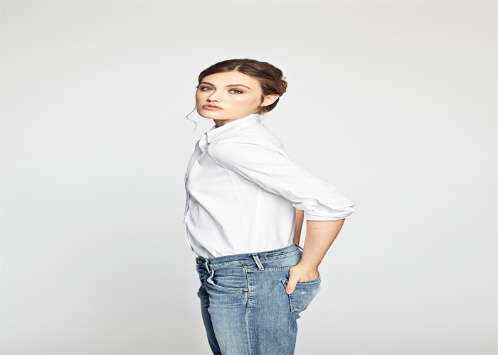
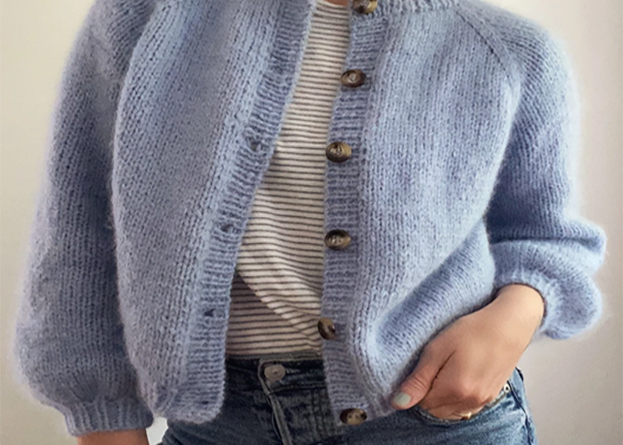
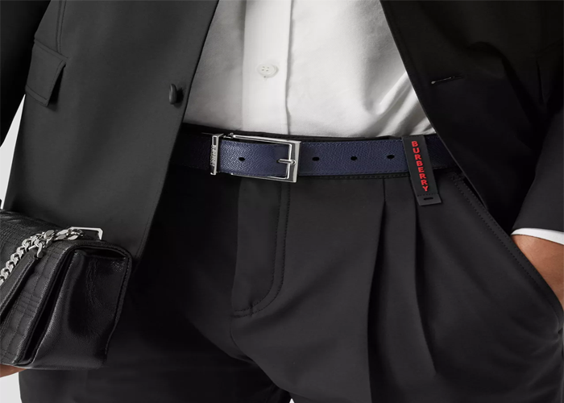
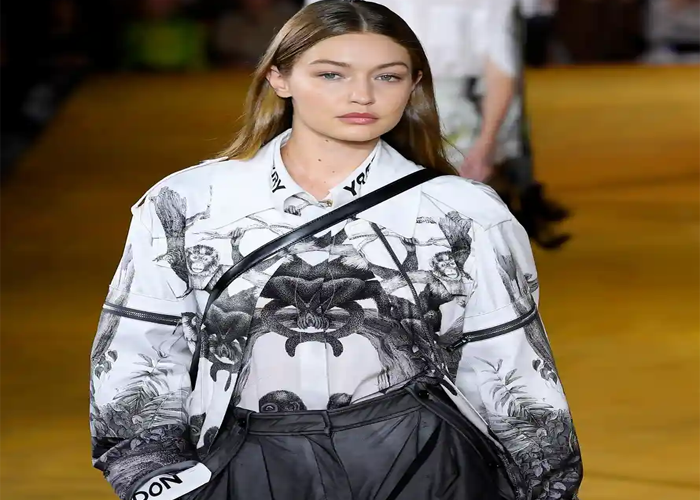
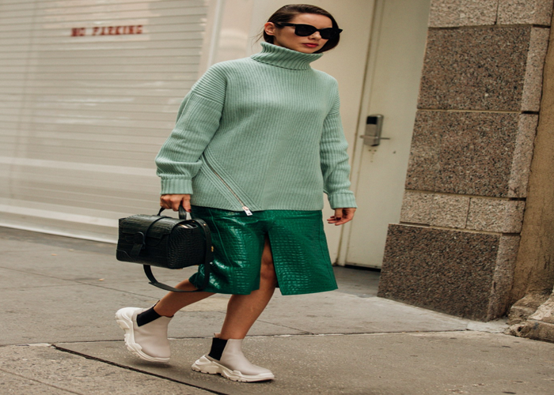
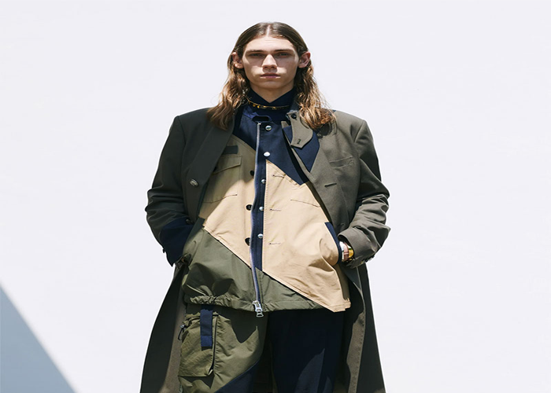

How to actually do it: Obviously, you want to show off what you're proud of—toned arms or a slim waist. It's the downplaying of less beloved parts that's tricky. One tactic? Add opposite volume, like wearing wide-leg trousers to offset a heavier upper half that's wearing something fitted. "The object is to even yourself out," explains designer Nicole Miller. "So avoid anything too oversize or you'll look bigger." Another idea: Distraction. If you're pear shaped, wear forgettable black pants, then bring the focus upward with a bold scarf, says Louise Roe, the author of the style-advice book Front Roe.
Try a vintage cardigan

Give those graphic tees you have in the back of your closet new life by topping with a granny cardigan. Hit the thrift store for one that looks like it knows its way around a cedar chest and pair it with cropped denim and loafers for an up-to-the-minute look that won't break the bank..
Pop on a belt

Consider belts an essential part of your outfit arsenal. Adding a textured, embellished or colorful belt is the fastest way to pull together the most basic pieces or quickly elevate a casual outfit, says Yraola..
Use a tape measure for online shopping

Especially when buying online, knowing your measurements can help prevent disappointing sizing mishaps. "I'm a big fan of online shopping," says Nazarudin. "But I find that sizes vary across brands and even cuts, so memorize your shoulder, bust, waist, hip and inseam measurements."
Go monochrome

Eliminate the pressure of matching hues by dressing head-to-toe in one color. It's chic for spring and might encourage you to try existing favs in a fresh, new way. Saladino especially loves gray, pink or white. If you've got a lot of denim in your stash, try the age-old "Canadian tuxedo." A denim jacket with a jean skirt will help turn your staples into a trendy look..
Don’t buy or keep something that doesn’t fit

It’s not uncommon to hold on to items that no longer fit you in the hope that they will again one day. It’s also not uncommon to buy something in a size too small as an incentive to lose weight or because it’s in the sale and they don’t have your usual size. However, holding on to these items – that you can’t physically wear – is one of the worst things you can do if you’re trying to reduce the size of your wardrobe. Be realistic and honest with yourself. If it doesn’t fit you, it's time to sell or donate it.